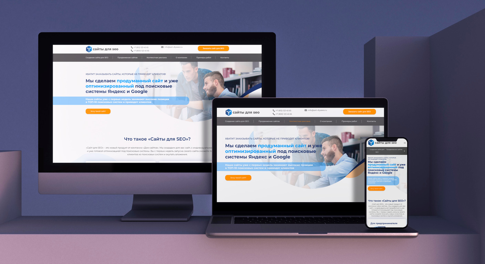
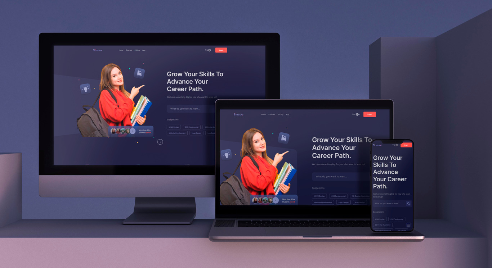
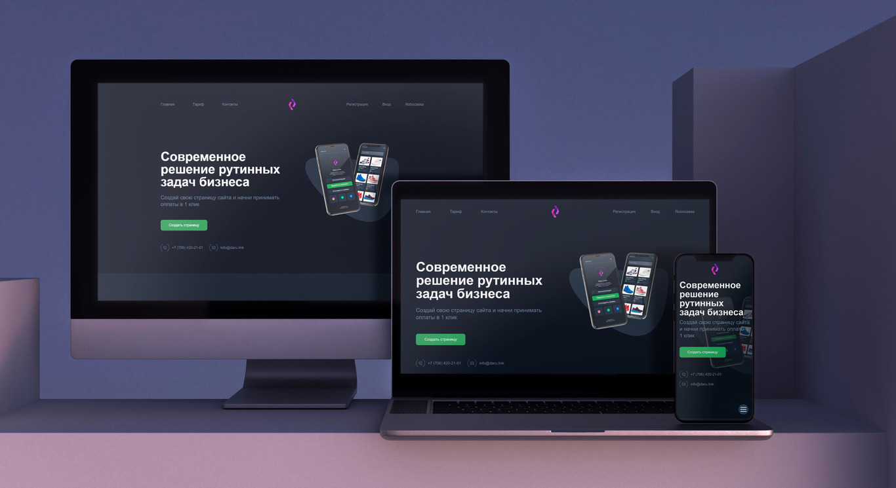

AHSCT
WordPress-сайт с кастомными блоками и удобным управлением контентом. Проект выполнен за 1 неделю и оптимизирован для SEO.

Клиника лядов
Верстка многостраничного сайта для клиники с упором на SEO и доступность.

SEO
Верстка лендинга с детально проработанным SEO, включающего множество секций для комплексного продвижения.
Analytics
Личный проект для изучения доступности и создания кастомных анимаций с акцентом на SVG и удобное свайп-меню.

Sinaw
Личный проект для отработки верстки с проработкой UX, hover-эффектов и параллакса.
Tochka
Верстка сайта для известной школы английского языка, выполненная в рамках тестового задания.
